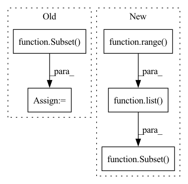

Pattern ID :12039

Before Change
split_point = int(len(base_tr_dataset) * (1 - self.val_split))
np.random.shuffle(idxs)
tr_subset = Subset(base_tr_dataset, idxs[:split_point])
val_subset = Subset(base_tr_dataset, idxs[split_point:])
return tr_subset, val_subset
After Change
// Performs train-validation split
split_point = int(len(tr_dataset) * (1 - self.val_split))
tr_subset = Subset(
tr_dataset, list(range(split_point))
)
val_subset = Subset(
val_dataset, list(range(split_point, len(tr_dataset)))
)
In pattern: SUPERPATTERN
Frequency: 3
Non-data size: 5
Instances
Fragment ID: 40706237
Project Name: microsoft/archai
Commit Name: d1dd0a59dc86ff271b12e111596b7cbefa2675d3
Time: 2022-12-16
Author: pierokauffmann@gmail.com
File Name: archai/datasets/providers/multi_lmdb_image_provider.py
M Class Name: MultiTensorpackLmdbImageProvider
N Class Name: MultiTensorpackLmdbImageProvider
M Method Name: get_train_val_datasets(3)
N Method Name: get_train_val_datasets(3)
M Parent Class: DatasetProvider
N Parent Class: DatasetProvider
M File Name: archai/datasets/providers/multi_lmdb_image_provider.py
N File Name: archai/datasets/providers/multi_lmdb_image_provider.py
M Start Line: 89
M End Line: 102
N Start Line: 89
N End Line: 113
'>
Before Change
if dataset == "cifar":
my_dataset = CIFAR10(root=data_dir, train=(split == "train"), download=True)
elif dataset == "imagenet":
my_dataset = Subset(ImageFolder(root=data_dir), list(range(200)))
else:
raise ValueError("Unrecognized dataset", dataset)
writer = DatasetWriter(len(my_dataset), write_path, {
After Change
else:
raise ValueError("Unrecognized dataset", dataset)
if subset > 0: my_dataset = Subset(my_dataset, range(subset))
writer = DatasetWriter(len(my_dataset), write_path, {
"image": RGBImageField(write_mode="smart",
// smart_factor=2,
'>
Fragment ID: 40706248
Project Name: libffcv/ffcv
Commit Name: 5597cf10332101650d868781ad52f4db8d10c6df
Time: 2021-10-28
Author: ailyas@mit.edu
File Name: scripts/write_image_datasets.py
M Class Name: AnonimousClass
N Class Name: AnonimousClass
M Method Name: main(9)
N Method Name: main(8)
M Parent Class:
N Parent Class:
M File Name: scripts/write_image_datasets.py
N File Name: scripts/write_image_datasets.py
M Start Line: 37
M End Line: 37
N Start Line: 35
N End Line: 44
'>
Before Change
// Performs train-validation split
split_point = int(len(tr_dataset) * (1 - self.val_split))
tr_subset = Subset(
tr_dataset, list(range(split_point))
)
val_subset = Subset(
val_dataset, list(range(split_point, len(tr_dataset)))
)
After Change
tr_dataset, indices[:split_point]
)
val_subset = Subset(
val_dataset, indices[split_point:]
)
assert len(tr_subset) + len(val_subset) == len(tr_dataset)
assert len(set(tr_subset.indices).intersection(set(val_subset.indices))) == 0
'>
Fragment ID: 40706241
Project Name: microsoft/archai
Commit Name: ac5423e894f49dd34a27c9a0adcfabb9f58da4d6
Time: 2022-12-16
Author: pierokauffmann@gmail.com
File Name: archai/datasets/providers/multi_lmdb_image_provider.py
M Class Name: MultiTensorpackLmdbImageProvider
N Class Name: MultiTensorpackLmdbImageProvider
M Method Name: get_train_val_datasets(3)
N Method Name: get_train_val_datasets(3)
M Parent Class: DatasetProvider
N Parent Class: DatasetProvider
M File Name: archai/datasets/providers/multi_lmdb_image_provider.py
N File Name: archai/datasets/providers/multi_lmdb_image_provider.py
M Start Line: 89
M End Line: 110
N Start Line: 88
N End Line: 111